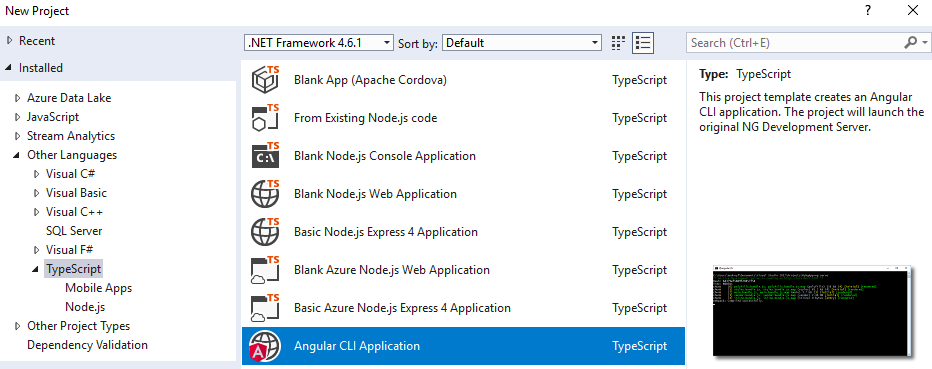
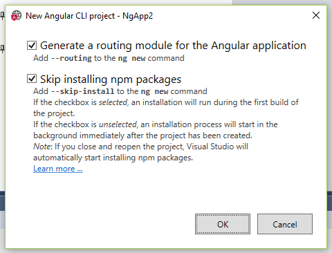
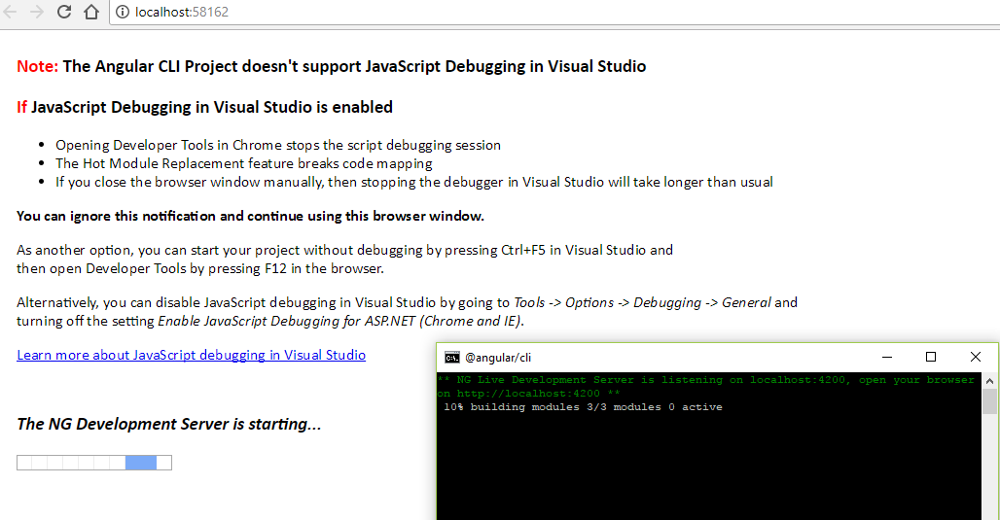
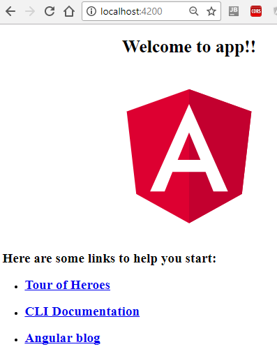

Ngx: Template for Visual Studio 2017
Posted on sø 24 september 2017 in Develop
At my work all web developers are getting a Angular 4 course. But there are a couple of issues with that.
- When you work with ngx in Visual Studio code you get a .gitnore file from the Angular CLI to take care of what not to commit to GIT. Since we are not yet using GIT at work (but TFS), then TFS don't know what to checkin.
- Since the develpers feel more comfortable with VS 2017, then we also have a chance to get control of files to Checkin with a
.csprojfile.
So HowTo import a Angular CLI project into VS 2017 on Windows?
Luckily there is a .vsix for that: Angular CLI Project Template
Installation
- Install VS 2017
- Include web development including TypeScript
- Framework ASP.NET Core 1.1.2
- Node 6.9.0 or higher (
node -v) - Should come with VS - Npm 3 or higher (
npm -v) - Should come with VS - Git for Windows (
git -version) - Should come with VS - Install latest Angular CLI (
ng version) - Exit VisualStudio
- Install Angular CLI Project Template by executing the
.vsix
Ready-Set-Go
- Start VisualStudio
- New - Project - Other Languages - TypeScript - Angular CLI Application - Name:

- In the project options choises select both if you are in doubt

- Installing the npm packages takes a long time. I prefer to skip that step and do it manually from a command prompt, where I feel I better can see what is going on, if something fails
- Open a command prompt and CD into the root of your Angular project
npm install # install all the node_modules found in package.json
-
Now start the app with F5
- VS 2017 will read .\properties\launchsettings.json
- If you started IIS Express, then VS will start dotnet.exe on http://localhost:58162/
- If you started
, then VS will start dotnet.exe on http://localhost:58163/

- In both cases Angular CLI will serve you app after buiding it with the Angular CLI on http://localhost:4200/

- This is very good news. Why? Because it does not matter what webserver or editor you are using. But the best of is that you use standard node.js deployment methods, so you can deploy your app anywhere. You can use standard npm or yarn managers without having to do a lot of strange Visual Studio configuration.
- You can now stop F5 debugging.
- Instead start a webserver manually from a command prompt (in the root of your project) with
ng serveNow you can see that it is Angular CLI (via .angular-cli.json) that in both cases uses webpack to build packages (via \src\tsconfig.app.json) to serve once again on http://localhost:4200/ - Press Ctrl-C to stop the webserver
- Checkin your code using your favorite VCS (e.g. TFS or GIT)
- VS 2017 will read .\properties\launchsettings.json
Links
The End